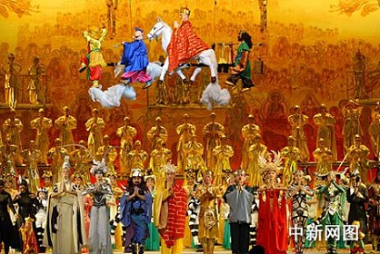
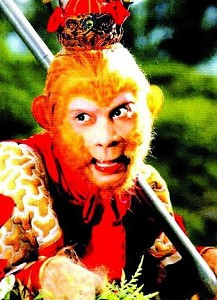
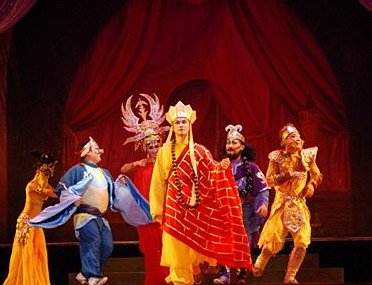

“误入小雷音”冷饭再炒
冯冯
多年前写过一篇“误入小雷音”，现在再炒一次冷饭。因为看到更多人误入小雷音，错把妖魔当佛拜。
“误入小雷音”是西游记内极富哲 理与佛理的一段故事，话说玄奘和尚，由孙悟空，沙僧与猪八戒保驾之下，往西天取经，一路千山万水，无数劫难，无数魔考，走了十多年，也还未到达灵山，玄奘未免心焦，嗟叹不知何日方见佛祖。一日，四众来到一处，但见山明水秀，祥光闪闪，瑞气千条，出现一座梵宇，金光灿烂，玄奘惊疑，就问徒弟们这是何方仙境？
猪八戒就说：“师父成日想拜灵山佛祖，今日见到灵山，却怎不下拜了？你看那不是雷音寺么？”唐僧一看，果然山门横遍大书“雷音寺”，叫声罪过，慌忙俯伏下拜。
那猪八戒 是个蠢货，孙猴子可是行家，他睁眼一看，就知那是妖魔所化现的佛刹。慌忙叫道：“师父不可！那不是真的雷音寺，那是妖魔所变化的假佛寺！”
蠢货猪八戒说：“师父休听猴子胡说，这分明是佛祖圣地！怎是妖魔？”唐僧向来耳朵软，爱听信八戒谗言，就说：“悟能说的是，悟空休得胡说！待为师晋殿去拜佛祖求取真经！”
唐僧没有天眼，看不透那是妖魔， 猪八戒是个大笨蛋，沙僧是个晦气和尚，就只有孙猴子有天眼，但是师父向来不听信悟空，此次更不听悟空劝阻，进殿就拜。进得殿内，但见佛祖高坐莲台，周围侍立五百罗汉，庄严无比，唐僧慌忙俯伏叩拜，不敢抬头。
以上只是简述，要看西游记原文才得真髓原味。
中国大陆有一套电视剧集“西游记”，由著名女导演杨洁执导，把这一段“小雷音”拍得无懈可击，是全集最精彩的一段，那又胖又大的螺发金身如来佛祖，笑容可掬，周围五百罗汉，姿态各别，栩栩如生，庄严岸然，看到唐僧师徒在墀下跪伏下拜，众佛就都嘻嘻偷笑，掩嘴挤眼，十分滑稽，等到唐僧爬起，众佛罗汉立即恢复道貌岸然，木立不动，唐僧再伏拜，他们又再嘻嘻偷笑，这一段戏，演得活龙活现。杨洁女士的导演手法，深获我心，令我佩服，那段妖魔冒充佛菩萨，戏弄唐僧，却又仍带顽皮童心，写得更胜原着西游记。
孙悟空可没被骗倒，他掣出金刚棒就打，大喝一声：“呔！何方妖魔，竟敢冒佛祖菩萨骗我师父！”
那群佛祖菩萨立刻现出原形，原来都是妖怪，变化成佛祖菩萨来骗人，当下与悟空大战一场，斗不过悟空，那假佛祖抖出一个巨袋，一阵风，把悟空与唐僧八戒沙僧全都装到袋子去了。
这段原着十分精彩，杨洁导演的电影更精彩，六小龄童演的孙猴子也唯肖唯妙，比京剧的更妙。这套电影，唯一缺点是特技摄影仍未赶上国际水平，若用今日的电脑拍摄，好来坞技术，此片就十全十美了。
历史上真人的玄奘三藏法师，是个 饱学大智大慧的人，并不如西游记原作或电影塑造的昏庸愚眛，又爱听猪八戒的谗言，又食古不化，又固执，冥顽不灵，蠢到无药可医。一代高僧，竟被小说形容如此，真是可叹！世俗无人知道玄奘取经译经推广唯识学之伟大贡献，只知他是一个老顽固和尚专门欺负孙悟空，每次被妖魔捉去，都全靠悟空救回。孙悟空常被猪八 戒谗言中伤。西游记是一本伟大文学作品，但是书中的人物全属虚构，并非历史上真人，不料唐僧却以此书而传名，大改形象，真实的唐僧却被埋没了。
西游记并非纯属佛教，其中是佛教与道教参半，作者显然是佛与道都兼学，才写出如此深入浅出的伟大文学作品。值得称道的章节很多，但仍以“误入小雷音”予我印象最深。此段故事指出自古以来就多鱼目混珠，自古而然，于今为烈！看看今天，到处都有“小雷音”，成千成万的人群，还信包装，只看外表，哪里认得清楚什么是大雷音小雷音？
又想起多年前郑少秋假扮北帝高坐 神座享受供养金钱美馔，噱天噱地，那段戏也是令人激赏捧腹大笑的，真实人生之中，多少人在扮佛扮神，扮北帝君，满盆满馔，又多少人在盲目崇拜！
原载《佛网》网站
2000 年 ── 2002 年